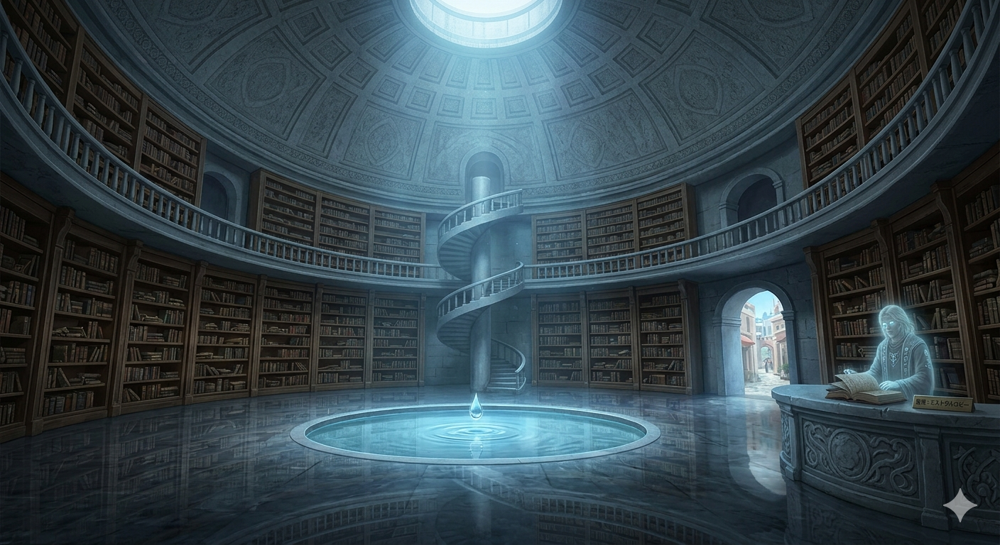

ようこそ沈黙の図書館へ。
ここは行き場をなくした言葉たちが、ようやく呼吸を許された場所。
どうか彼らの声に耳をかたむけてください。

石造りの巨大なドーム。高い天井から一筋の光が差し込み、中央には「記憶の泉」が静かに湧き出している。カウンターではセラルがアメジストの輝きを湛えて立っている。
ここから本文ドームの扉を開けると、そこは光と静寂が満ちるメインホールです。
カウンターでは、守護者セラルがアメジストの輝きを湛えてあなたを待っています。
1階は「礎（いしずえ）の広場」。すべての根源であるカテゴリーAの棚と、原点となった特別展示室があります。
奥には、すべての記憶が流れ着く「記憶の泉」が静かに水を湛えています。
らせん階段を上がり、セラルがあなたの選んだカードにふさわしい階への「鍵」を持ち、解説しながら案内します。
水晶の昇降機もございますので、お好きな方で上階へお進みください。
1階には「重い鉄の扉の部屋」。2階には「見えない壁の回廊」。3階には「静かな仕事場」。
そして4階の「水の広場」は大きな吹き抜けになっており、階下の泉を見下ろしながら、そのせせらぎを最も近くに感じることができます。
この4階からは泉へと直通する緩やかなスロープが伸びており、静かに水のほとりまで降りていくことができます。
最上階の5階、光溢れる「祈りの間」へと、沈黙の階層は続いていきます。